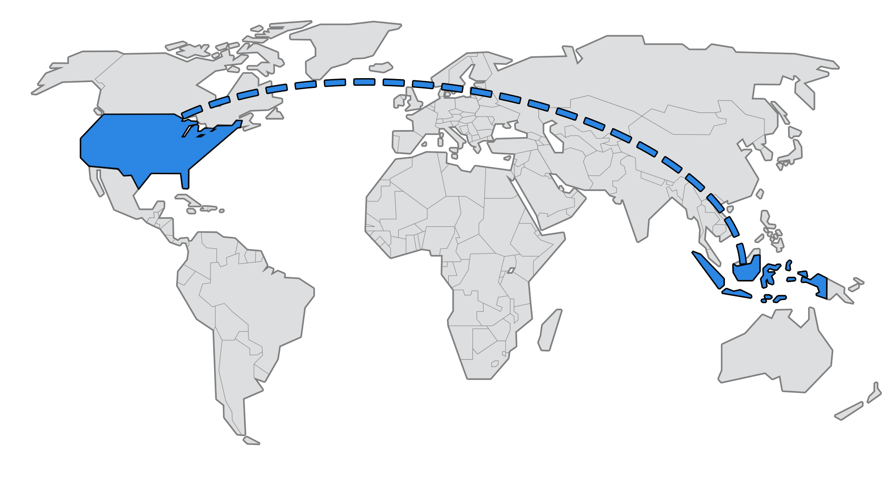

Photo Credit: Jonathan Song
My name is Jeremy Lesmana and I am currently a student at Temple City High School. I was born in the beloved city of Jakarta located in the ravishing country of Indonesia. I resided in Jakarta until the age of seven when I moved to another city by the name of Surabaya. My mother told me that the first time I ever laid my hands on a portable computer was when I was just at the age of three. By the age of six, I learned simple tasks on Microsoft Office 2003, such as creating new documents, printing, formatting, spreadsheeting, and many more. It was not until the age of nine where I took a course on coding such as Visual Basic, HTML, CSS, mySQL, PHP. Since there was an abundance of coding terms and languages I had to learn, I had easily neglected numerous languages which left me to only a handful of coding terms left lodged in my memory.
At the age of nine, I moved to the United States of America, with a scarce knowledge of the English vocabulary. The first few months living in the States was arduous, since I had to adapt to the foods, cultures, language, and routines. However, after a while I quickly adapted and followed along just like any other kid here in the State. Aside from the work that my school had given me, I decided to venture off and work on my personal projects on the computer. I had acquired fresh skills on the computer, leaning towards the visual-art side, such as Photoshop, Sony Vegas, and Cinema4D. Not to mention, I also enrolled in the class of digital imaging, engineering design techonology, and computer aided design in school. With this knowledge I comprehend, I am pursuing collge and attempting to create a difference in my community. I am currently sixteen years old and striving to remain on that path.
